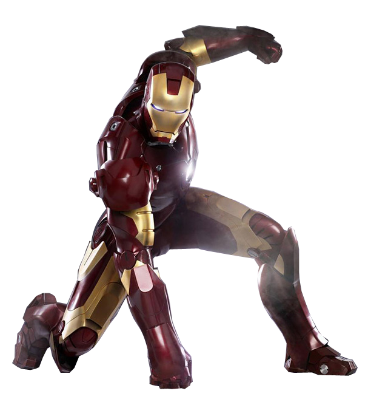

{kind=link}
{kind=link}
主人公：アンソニー・エドワード・スターク/アイアンマン 著名な別名：Cobalt Man、Iron Knight、ShellHead
MARVEL's Fan
HOME
【アイアンマン】アメコミ原作や能力を徹底解説

【本名】
【身体情報】
- 種族：人間
- 性別：男
- 身長：185cm(通常時)198cm(アーマー装着時)
- 体重：86Kg(通常時)192Kg(アーマー装着時)
【ステータス/強さ】
- 耐久性:6
- エネルギー:6
- ファイティングスキル:4
- 知能:6
- 速度:5
- 力:6
※MAX7での評価(米MARVEL公式より)
【能力】
【ストーリー：原作コミックス】
・身体能力
アーマー無しでは普通の人と同じレベル。
・パワードスーツ
類稀な天才的頭脳により自ら開発したパワードスーツ通称「アーマー」を装着している。
アーマーの変更とアップグレードにより搭載兵器や機能、外見などが様々な変更を遂げている。
・スーツの兵器
スーツの内臓兵器はスーツごとに進歩しているが、必ずガントレットの掌から発射される「リパルサーレイ」が装備されている。
その他には胸部の「ユニビーム」、周囲のキネティックエネルギーを集め目標が遠くなるほどに強力になる「パルスボルト」、電磁力パルス発生装置「エネルギーシールド」、ソニックブラスト、囮を作り出すホログラフ発生装置などがある。
・飛行能力
アーマーには基本、飛行機能が備わっているため戦闘は基本空中で行う。
・オリジン
アメリカの巨大軍需企業「スタークインダストリーズ」CEOハワード・スターク。マサチューセッツ工科大学を首席で卒業、20歳の誕生日に両親が事故で他界してしまい、莫大な遺産と大企業の経営権を得ることになった。社長に就任したトニーは、自身の頭脳を使って数々の新技術を次々に開発し、一躍時の人となった。
折りしも、ベトナム戦争の真っ最中。トニーも新兵器の実用テストのために、ベトナムのジャングルを訪れていたが、そこで誤って地雷を踏んでしまい、現地ゲリラに捕らえられてしまう。心臓近くに突き刺さった破片により、余命いくばくも無いトニー。彼が天才的発明家であることに目をつけたゲリラの首領は、手術をする代わりに新兵器の開発を強制する。
この設定は1990年代に湾岸戦争で負傷したと修正されていたが、2005年にリブートされたアイアンマンの第4シリーズにおいて、トニーがゲリ ラに捕まった地がアフガニスタンと2度目の修正がされた。2008年の映画版はこれを踏襲している。
生きるためにその要求を受け入れたトニーだが、同じく捕虜として捕まっていた天才的物理学者のインセン教授と共に兵器開発のふりをしながら、自身の心臓のペースメーカーとなるパワードスーツを作り上げる。最後の充電中自らの命と引き換えに時間を稼いでくれたインセン教授のおかげでパワードスーツを起動させることに成功し、アイアンマンとなったトニーはゲリラたちを一蹴、母国へ帰還する。その後、アイアンマンを自社のボディーガードとして公表しヒーロー活動を始める。